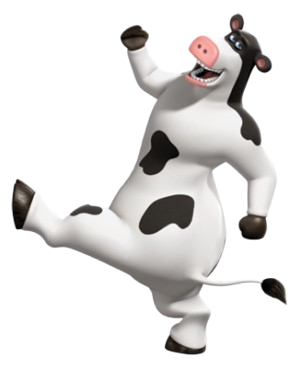
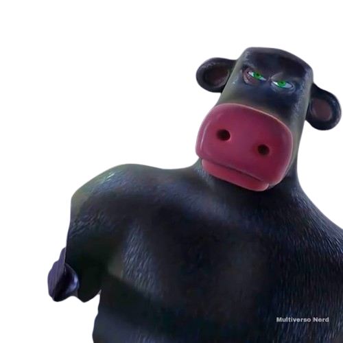
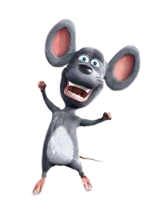

Bem-vindo à fazenda mais animada do cinema!
Conheça os personagens, curiosidades e os bastidores do filme "O Segredo dos Animais".
🌟 Personagens

Otis
O boi divertido e brincalhão que adora festas!

Ben
O pai responsável de Otis, que cuida da fazenda com coragem.

Pip
O ratinho esperto e o melhor amigo de Otis.
🐖 Atrações da Fazenda
- Festas noturnas no celeiro
- Corridas de galinha
- Academia dos porcos
- Show de talentos animais